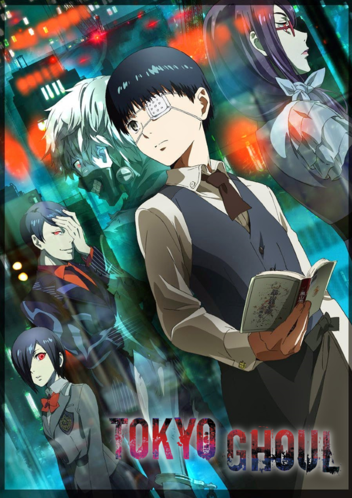

Eram alguns jogos nostálgicos em que passava horas jogando.
Meu nome é Lucas Nogueira. Sou estudante de informática do Segundo Ano estudo no IFF Quissamã. Gosto de animes, séries e jogos.
Tenho como objetivo conseguir um bom emprego e ser bem sucedido.
Esta é a minha página pessoal com minhas informações e aspirações futuras.
Eram alguns jogos nostálgicos em que passava horas jogando.


Pesquisar mais | Ver outro projeto
Durante minha jornada no IFF Quissamã, busco aprimorar minhas habilidades em tecnologia e programação diariamente. Acredito que o estudo constante na área de TI é o caminho certo para alcançar meus objetivos profissionais e construir uma carreira de sucesso no mercado de trabalho.